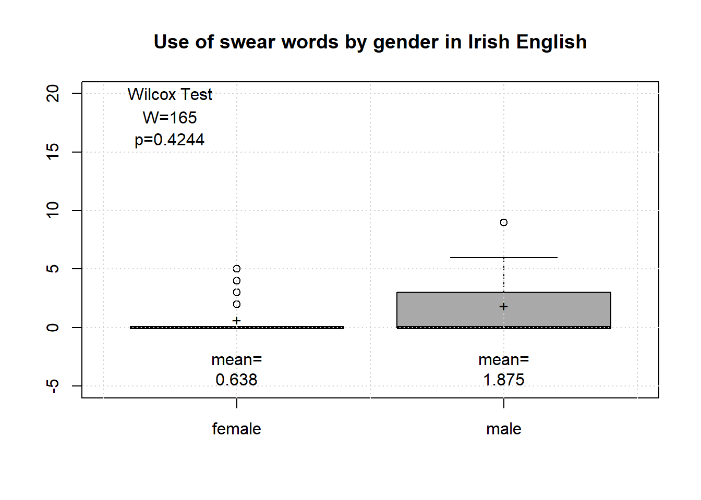
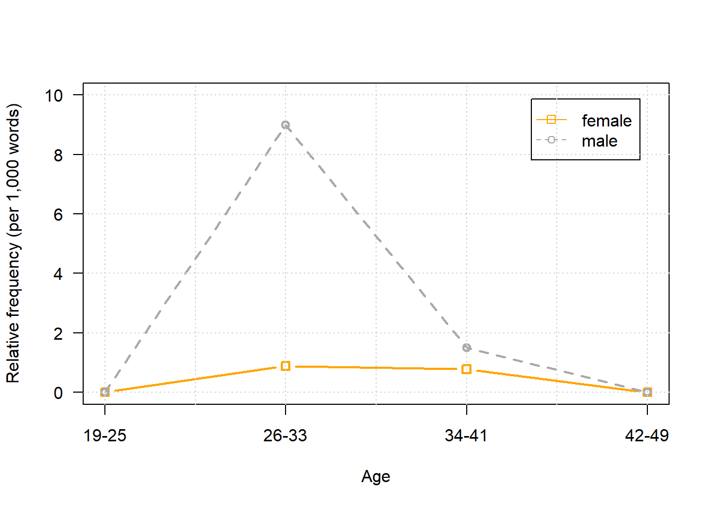

Corpus Linguistics with R
Martin Schweinberger
2020-04-15

1 Introduction
This section presents case studies on how to use “R” in corpus linguistics. The entire code for the sections below can be downloaded here.
The case studies merely exemplify ways in which R can be used in language-based research rather than providing mdels of how to do research. The first case study aims to answer if swearing differs across the genders. In other words, this case study focuses on whether men or women swear more. The second case study investigates the use of adjectiv amplifiers in Australian English and aims to answer whether very is replaced by really as the dominant amplifying variant.
Preparation and session set up
As all calculations and visualizations in this tutorial rely on R, it is necessary to install R and RStudio. If these programs (or, in the case of R, environments) are not already installed on your machine, please search for them in your favorite search engine and add the term download. Open any of the first few links and follow the installation instructions (they are easy to follow, do not require any specifications, and are pretty much self-explanatory).
In addition, certain packages need to be installed so that the scripts shown below are executed without errors. Before turning to the code below, please install the packages by running the code below this paragraph. If you have already installed the packages mentioned below, then you can skip ahead ignore this section. To install the necessary packages, simply run the following code - it may take some time (between 1 and 5 minutes to install all of the packages so you do not need to worry if it takes some time).
# clean current workspace
rm(list=ls(all=T))
# set options
options(stringsAsFactors = F) # no automatic data transformation
options("scipen" = 100, "digits" = 4) # supress math annotation
# manual installation
install.packages("devtools")
# load devtools and install development version of data.table
library(devtools)
install_github("Rdatatable/data.table", build_vignettes = FALSE)Once you have installed R, R-Studio, and have also initiated the session by executing the code shown above, you are good to go.
2 Case Study: Gender Differences in Swearing
This case study aims to answer if the frequency with which speakers use swear words is correlated with the gender of speakers. In a first step, we load the load the data into “R”. The way that the corpus data is loaded in this example is somewhat ackward because the data is in a server directory rather than on a harddrive on a simple PC. If the corpus data is not stored in a directory of a server, then you should not use the code shown imediately below but code in the window following the code imediately below.
# define path to corpus
corpuspath <- "https://slcladal.github.io/data/ICEIrelandSample/"
# define corpusfiles
files <- paste(corpuspath, "S1A-00", 1:20, ".txt", sep = "")
files <- gsub("[0-9]([0-9][0-9][0-9])", "\\1", files)
# load corpus files
corpus <- sapply(files, function(x){
x <- readLines(x)
x <- paste(x, collapse = " ")
})
# inspect corpus
str(corpus)## Named chr [1:20] "<S1A-001 Riding> <I> <S1A-001$A> <#> Well how did the riding go tonight <S1A-001$B> <#> It was good so it was "| __truncated__ ...
## - attr(*, "names")= chr [1:20] "https://slcladal.github.io/data/ICEIrelandSample/S1A-001.txt" "https://slcladal.github.io/data/ICEIrelandSample/S1A-002.txt" "https://slcladal.github.io/data/ICEIrelandSample/S1A-003.txt" "https://slcladal.github.io/data/ICEIrelandSample/S1A-004.txt" ...If the corpus data is stored on your own computer (on not on a serves as is the case in the present example), you shoudl use the follw
# define path to corpus
# WARNING: you need to include your own path!
corpuspath <- "D:\\Uni\\UQ\\LADAL\\SLCLADAL.github.io\\data\\ICEIrelandSample"
# define corpusfiles
files <- list.paste(corpuspath, all.names = T)
# load corpus files
corpus <- sapply(files, function(x){
x <- scan(x, what = "char", sep = "", quote = "", skipNul = T)
x <- paste(x, sep = " ", collapse = " ")
})
# inspect corpus
str(corpus)Now that the corpus data is loaded, we can prepare the searches by defining the search patterns.
# load concordancing function
source("https://slcladal.github.io/rscripts/ConcR_2.5_LoadedFiles.R")
# define surrounding context for KWIC display
context <- 20
# define that we want everything that preceeds a match for the serach pattern
all.pre = T
# define search patterns
search.pattern1 <- c("[A|a]rse[a-z]{0,}")
search.pattern2 <- c("[F|f]uck[a-z]{0,}")
search.pattern3 <- c("[S|s]hit[a-z]{0,}")
search.pattern4 <- c("[C|c]ock[a-z]{0,}")
search.pattern5 <- c("[W|w]hore[a-z]{0,}")
search.pattern6 <- c("[A|a]ss[holes]{0,5}")
search.pattern7 <- c("[D|d]ick[a-z]{0,}")
search.pattern8 <- c("[W|w]anker[a-z]{0,}")
search.pattern9 <- c("[C|c]rap[a-z]{0,}")
search.pattern10 <- c("[B|b]itch[a-z]{0,}")
search.pattern11 <- c("[D|d]amn[a-z]{0,}")It would, of course, also be possible to search for all search patterns in a single search but it may be advantageous to split search patterns so that the code is easier to parse and understand. After preparing the search, we perform the concordancing and create a table with the results.
# start search
sw1 <- ConcR(corpus, search.pattern1, context, all.pre = T)
sw2 <- ConcR(corpus, search.pattern2, context, all.pre = T)
sw3 <- ConcR(corpus, search.pattern3, context, all.pre = T)
sw4 <- ConcR(corpus, search.pattern4, context, all.pre = T)
#sw5 <- ConcR(corpus, search.pattern5, context, all.pre = T)
sw6 <- ConcR(corpus, search.pattern6, context, all.pre = T)
#sw7 <- ConcR(corpus, search.pattern7, context, all.pre = T)
sw8 <- ConcR(corpus, search.pattern8, context, all.pre = T)
sw9 <- ConcR(corpus, search.pattern9, context, all.pre = T)
sw10 <- ConcR(corpus, search.pattern10, context, all.pre = T)
#sw11 <- ConcR(corpus, search.pattern11, context, all.pre = T)
# combine search results
swire <- rbind(sw1, sw2, sw3, sw4, sw6, sw8, sw9, sw10)
# convert matrix into a data frame
swire <- as.data.frame(swire)
# inspect structure of the data
str(swire)## 'data.frame': 125 obs. of 5 variables:
## $ OriginalString : chr "https://slcladal.github.io/data/ICEIrelandSample/S1A-018.txt" "https://slcladal.github.io/data/ICEIrelandSample/S1A-019.txt" "https://slcladal.github.io/data/ICEIrelandSample/S1A-020.txt" "https://slcladal.github.io/data/ICEIrelandSample/S1A-020.txt" ...
## $ PreContext : Factor w/ 122 levels " doesn't bother his ",..: 1 2 4 3 5 6 9 7 8 12 ...
## $ Token : Factor w/ 22 levels "arse","arsed",..: 1 1 1 2 4 5 4 5 5 5 ...
## $ PostContext : Factor w/ 124 levels " <#> I mean <S1A-018",..: 1 2 3 4 13 8 12 10 6 7 ...
## $ EntirePreContext: Factor w/ 125 levels "<S1A-018 Drama> <I> <S1A-018$A> <#> Ambulance was crap <S1A-018$B> <#> I know that <#> I don't need you to tell"| __truncated__,..: 1 2 3 4 5 6 7 8 9 10 ...The variable “OriginalString” contains the file name. However, we do not want the entire path to the file but only the file name itself. Therefore, we will clean the variable “OriginalString” so that it only contains the file names.
# clean file names
swire$OriginalString <- gsub(".*/", "", swire$OriginalString)
swire$OriginalString <- gsub("\\..*", "", swire$OriginalString)
# store file names
files <- names(table(swire$OriginalString))
# inspect result
names(table(swire$OriginalString))## [1] "S1A-001" "S1A-002" "S1A-003" "S1A-004" "S1A-005" "S1A-006" "S1A-007"
## [8] "S1A-009" "S1A-010" "S1A-011" "S1A-012" "S1A-013" "S1A-014" "S1A-015"
## [15] "S1A-016" "S1A-017" "S1A-018" "S1A-019" "S1A-020"Now, we nromalize the tokens that we have extracted by converting them into lower case. Once we have done so, we will inspect the extracted tokens to check if our search strings have indeed captured swear words.
# convert tokens to lower case
swire$Token <- tolower(swire$Token)
# inspect tokens
names(table(swire$Token))## [1] "arse" "arsed" "ass" "asse" "asses" "assle"
## [7] "asso" "bitch" "bitches" "bitchy" "cocktails" "crap"
## [13] "crape" "fuck" "fucked" "fucking" "fucks" "shit"
## [19] "shite" "wanker"Most of the extracted patters do indeed represent swear words but some tokens do not (e.g. “cocktails”). In other cases, we need to check if the swear word is indeed an instance of swearing or some other use of the word. To remove instances of words that clearly do not represent swear words, we create a vector with those words and remove rows from the table that contain those elements.
# create vector with non-swear words
nonswearwords <- c("cocktails", "crape")
# check number of rows in current data
nrow(swire)## [1] 125# remove rows containing nonswearwords
swire <- swire[!swire$Token %in% nonswearwords,]
# check number of rows of data after removal
nrow(swire)## [1] 122The results show that we have removed three lines from the table. Next, we inspect the data to check which other instances do not represent swear words. o make this more convenient, we create a new variable that provides a display that is easier to read inspect the KWIC for false hits.
# create new variable
swire$KWIC <- paste(swire$PreContext, " << ", swire$Token, " >> ", swire$PostContext, sep = "")
# inspect first lines
head(swire$KWIC)## [1] " doesn't bother his << arse >> <#> I mean <S1A-018"
## [2] " just a pain in the << arse >> like <#> He was <{>"
## [3] "2> <[2> pain in the << arse >> </[2> who is bummin"
## [4] " thought I can't be << arsed >> talking to you <#> "
## [5] " all this shite <#> << fuck >> them <#> I 'm never"
## [6] "</unclear> I 've to << fucking >> deal with that guy "While you can, of course, also check the results in “R”, you can also save the results on your PC to inspect them in Excel or another spreadsheet software using the “write.table” function.
# save results on disc
# WARNING: you need to include your own path!
write.table(swire$KWIC, "D:\\Uni\\UQ\\LADAL\\SLCLADAL.github.io\\data/swearwordkwic.txt", sep = "\t", quote = F)The KWIC display shows that almost none of the tokens for “ass” are real swear word uses but instances of “Mass”, “glass” and “pass” and the like (see below).
Coding of swear words in Excel.
However, some of the instances of “ass” do represent swear word use, e.g. " like a pain in the << ass >> too you can like <S“. Thus, in a next step, we will exclude those elements which represent swear word use. If the sequence”ass" is part of a word (e.g. “glass”, then there is no space before the “ass” while there is in cases of the prase “pain in the ass”). Therefore, we create a new variable called “remove” and exclude all instances of “ass” that are not preceeded by a space.
# clean data frame
swire$remove <- ifelse(swire$Token == "ass" & nchar(gsub(".* ", " ", swire$PreContext) > 1), "remove", "keep")
# remove items that are not swear words
swire <- swire[swire$remove != "remove", ]In addition,w e will exclude instances of “bitchy”, “asses”, “assle”, and “asso” as they also represent non-swear word uses.
# create vector with non-swear word uses
nonswearworduses <- c("bitchy", "asses", "assle", "asso")
# remove non-swear word uses
swire <- swire[!swire$Token %in% nonswearworduses, ]
# inspect results
names(table(swire$Token))## [1] "arse" "arsed" "asse" "bitch" "bitches" "crap" "fuck"
## [8] "fucked" "fucking" "fucks" "shit" "shite" "wanker"Now, we will extract the speaker to find out who has uttered the swaer word. In addition, we will remove the “remove” column.
# remove columns
swire$remove <- NULL
swire$KWIC <- NULL
# extract speaker
swire$EntirePreContext <- gsub(".*<S", "<S", swire$EntirePreContext)
swire$EntirePreContext <- gsub(" .*", "", swire$EntirePreContext)
# rename columns
colnames(swire) <- ifelse(colnames(swire) == "EntirePreContext", "Speaker",
ifelse(colnames(swire) == "OriginalString", "File",colnames(swire)))
# inspect data
head(swire)## File PreContext Token PostContext Speaker
## 1 S1A-018 doesn't bother his arse <#> I mean <S1A-018 <S1A-018$B>
## 2 S1A-019 just a pain in the arse like <#> He was <{> <S1A-019$C>
## 3 S1A-020 2> <[2> pain in the arse </[2> who is bummin <S1A-020$C>
## 4 S1A-020 thought I can't be arsed talking to you <#> <S1A-020$D>
## 5 S1A-005 all this shite <#> fuck them <#> I 'm never <S1A-005$B>
## 6 S1A-005 </unclear> I 've to fucking deal with that guy <S1A-005$B># tabulate speaker and swear word frequency
swirespk <- table(swire$Speaker)
swirespk <- data.frame(swirespk)
colnames(swirespk) <- c("Speaker", "Swearwords")
# inspect data
head(swirespk)## Speaker Swearwords
## 1 <S1A-003$A> 3
## 2 <S1A-005$B> 10
## 3 <S1A-005$C> 1
## 4 <S1A-010$A> 2
## 5 <S1A-011$A> 2
## 6 <S1A-011$B> 3Now that we extracted how many swear words the speakers in the corpus have used, we can load the biodata of the speakers.
# load bio data
bio <- read.table("https://slcladal.github.io/data/data01.txt",
header = T, sep = "\t")
# create new speaker id
bio$file.speaker.id <- paste("<", bio$text.id, "$", bio$spk.ref, ">", sep = "")
# determine file
bio$File <- bio$text.id
# create shorter table
bio <- data.frame(bio$File, bio$file.speaker.id, bio$sex, bio$age, bio$word.count)
# add column names
colnames(bio) <- c("File", "Speaker", "Gender", "Age", "Words")
# inspect data
head(bio)## File Speaker Gender Age Words
## 1 S1A-001 <S1A-001$A> male 34-41 765
## 2 S1A-001 <S1A-001$B> female 34-41 1298
## 3 S1A-002 <S1A-002$A> female 26-33 391
## 4 S1A-002 <S1A-002$B> female 19-25 47
## 5 S1A-002 <S1A-002$C> male 50+ 200
## 6 S1A-002 <S1A-002$D> female 50+ 464In a next step, we combine the table with the speaker information with the table showing the swaer word use.
# remove speakers of files that are not in the sample corpus
bio <- bio[bio$File %in% files,]
# combine frequencies and biodata
swire <- join(bio, swirespk, by = c("Speaker"), type = "left")
# replave NA with 0
swire$Swearwords <- ifelse(is.na(swire$Swearwords), 0, swire$Swearwords)
# inspect data
head(swire); table(swire$File)## File Speaker Gender Age Words Swearwords
## 1 S1A-001 <S1A-001$A> male 34-41 765 0
## 2 S1A-001 <S1A-001$B> female 34-41 1298 0
## 3 S1A-002 <S1A-002$A> female 26-33 391 0
## 4 S1A-002 <S1A-002$B> female 19-25 47 0
## 5 S1A-002 <S1A-002$C> male 50+ 200 0
## 6 S1A-002 <S1A-002$D> female 50+ 464 0##
## S1A-001 S1A-002 S1A-003 S1A-004 S1A-005 S1A-006 S1A-007 S1A-008 S1A-009 S1A-010
## 2 9 6 3 3 5 6 0 3 5
## S1A-011 S1A-014 S1A-018 S1A-019 S1A-020 S1A-021 S1A-022 S1A-023 S1A-029 S1A-033
## 4 1 1 4 4 0 0 0 0 0
## S1A-035 S1A-036 S1A-037 S1A-038 S1A-039 S1A-040 S1A-043 S1A-044 S1A-045 S1A-046
## 0 0 0 0 0 0 0 0 0 0
## S1A-047 S1A-049 S1A-050 S1A-051 S1A-052 S1A-053 S1A-054 S1A-055 S1A-056 S1A-058
## 0 0 0 0 0 0 0 0 0 0
## S1A-059 S1A-060 S1A-061 S1A-063 S1A-064 S1A-066 S1A-067 S1A-068 S1A-069 S1A-070
## 0 0 0 0 0 0 0 0 0 0
## S1A-071 S1A-072 S1A-073 S1A-074 S1A-075 S1A-076 S1A-077 S1A-078 S1A-079 S1A-080
## 0 0 0 0 0 0 0 0 0 0
## S1A-081 S1A-082 S1A-083 S1A-084 S1A-085 S1A-086 S1A-087 S1A-088 S1A-089 S1A-090
## 0 0 0 0 0 0 0 0 0 0
## S1A-091 S1A-092 S1A-093 S1A-094 S1A-095 S1A-096 S1A-097 S1A-098 S1A-099 S1A-100
## 0 0 0 0 0 0 0 0 0 0
## S1B-001 S1B-002 S1B-003 S1B-004 S1B-005 S1B-006 S1B-007 S1B-008 S1B-009 S1B-010
## 0 0 0 0 0 0 0 0 0 0
## S1B-011 S1B-012 S1B-013 S1B-017 S1B-018 S1B-020 S1B-021 S1B-022 S1B-023 S1B-024
## 0 0 0 0 0 0 0 0 0 0
## S1B-025 S1B-026 S1B-027 S1B-028 S1B-029 S1B-030 S1B-031 S1B-033 S1B-034 S1B-035
## 0 0 0 0 0 0 0 0 0 0
## S1B-036 S1B-037 S1B-038 S1B-039 S1B-040 S1B-041 S1B-042 S1B-043 S1B-044 S1B-045
## 0 0 0 0 0 0 0 0 0 0
## S1B-046 S1B-049 S1B-051 S1B-052 S1B-053 S1B-054 S1B-055 S1B-056 S1B-057 S1B-058
## 0 0 0 0 0 0 0 0 0 0
## S1B-059 S1B-060 S1B-066 S1B-067 S1B-069 S1B-070 S1B-071 S1B-074 S1B-076 S1B-078
## 0 0 0 0 0 0 0 0 0 0
## S1B-079 S1B-080 S2A-002 S2A-003 S2A-004 S2A-009 S2A-010 S2A-014 S2A-016 S2A-023
## 0 0 0 0 0 0 0 0 0 0
## S2A-024 S2A-025 S2A-026 S2A-027 S2A-031 S2A-033 S2A-035 S2A-039 S2A-040 S2A-044
## 0 0 0 0 0 0 0 0 0 0
## S2A-045 S2A-046 S2A-047 S2A-048 S2A-049 S2A-050 S2A-052 S2A-055 S2A-060 S2A-067
## 0 0 0 0 0 0 0 0 0 0
## S2B-001 S2B-002 S2B-003 S2B-004 S2B-005 S2B-006 S2B-007 S2B-008 S2B-009 S2B-010
## 0 0 0 0 0 0 0 0 0 0
## S2B-012 S2B-013 S2B-015 S2B-016 S2B-017 S2B-019 S2B-022 S2B-024 S2B-025 S2B-026
## 0 0 0 0 0 0 0 0 0 0
## S2B-027 S2B-028 S2B-029 S2B-031 S2B-032 S2B-033 S2B-034 S2B-036 S2B-037 S2B-038
## 0 0 0 0 0 0 0 0 0 0
## S2B-039 S2B-040 S2B-041 S2B-042 S2B-043 S2B-045 S2B-046 S2B-048 S2B-049 S2B-050
## 0 0 0 0 0 0 0 0 0 0# clean data
swire <- swire[is.na(swire$Gender) == F, ]
swire <- swire[is.na(swire$Age) == F, ]
swire <- swire[swire$Words != 0, ]
# calculate per-1,000-words frequency
swire$RelativeFrequency <- round(swire$Swearwords/swire$Words*1000)
# inspect data
head(swire)## File Speaker Gender Age Words Swearwords RelativeFrequency
## 1 S1A-001 <S1A-001$A> male 34-41 765 0 0
## 2 S1A-001 <S1A-001$B> female 34-41 1298 0 0
## 3 S1A-002 <S1A-002$A> female 26-33 391 0 0
## 4 S1A-002 <S1A-002$B> female 19-25 47 0 0
## 5 S1A-002 <S1A-002$C> male 50+ 200 0 0
## 6 S1A-002 <S1A-002$D> female 50+ 464 0 0Now that we have prepared our data, we can plot swear word use by gender.
# plot swear word use by gender
boxplot(swire$RelativeFrequency ~ swire$Gender,
ylim = c(-5, 20),
main = "Use of swear words by gender in Irish English",
col = c("orange", "darkgrey"),
notch = F)
grid()
# add text
# add + where mean values are
text(1:2, tapply(swire$RelativeFrequency, swire$Gender, mean), "+")
# add mean value below box
text(1:2, c(-3.5, -3.5), paste("mean=\n", round(tapply(swire$RelativeFrequency, swire$Gender, mean), 3), sep = ""))
# include statz in graph
# add results of Wilcox Test
text(.75, 20, "Wilcox Test")
text(.75, 18, paste("W=", as.vector(unlist(wilcox.test(swire$RelativeFrequency ~ swire$Gender)[1])), sep = ""))
text(.75, 16, paste("p=", round(wilcox.test(swire$RelativeFrequency ~ swire$Gender)[[3]], 4), sep = ""))
Next, we plot the use of swearwords by both age and gender. To do this, we need to calculate the mean frequency of swearwords by age and gender.
# create interaction table
interactiontb <- as.data.frame(tapply(swire$RelativeFrequency ,
list(swire$Age, swire$Gender),
mean))
# inspect table
interactiontb## female male
## 0-18 NA NA
## 19-25 0.0000000 0.0
## 26-33 0.8846154 9.0
## 34-41 0.7777778 1.5
## 42-49 NA NA
## 50+ 0.0000000 0.0We will now plot the distribution to see whether there are age related differences in swear word use between men and women.
plot(interactiontb$female,
type = "b", lwd = 2,
lty = 1,
pch = 0,
cex = 1,
ylim = c(0,10),
col = "orange",
axes = F,
xlab = "Age",
ylab = "Relative frequency (per 1,000 words)")
lines(interactiontb$male,
type = "o",
lwd = 2,
lty = 2,
pch = 1,
col = "darkgrey",
cex = 1)
axis(1, at = 0:5, lab = c("", "19-25", "26-33", "34-41", "42-49", "50+"))
# add y-axes with specified labels at specified intervals
axis(2, at = seq(0, 10, 2), las = 1, lab = seq(0, 10, 2))
# add legend
legend("topright", inset = .05, c("female", "male"),
horiz = F, pch = c(0,1), lty = c(1,2), col = c("orange", "darkgrey"))
# create a box around the plot
box()
# add grid
grid()
The graph suggests that the genders do not differ in their use of swear words execpt for the age bracket from 26 to 33 years of age where men swear substantially. In fact, the difference between the genders shown in the plot before is entirely due to the difference in this middle-aged age bracket.
It has to be borne in mind, thoguh, that this is merely a case study and that a more fine-grained analysis on a substantially larger data set were necessary to get a more reliable impression.
2.1 Case Study: Adjective Amplification
In this case study, we will investigate changes in adjective amplification (very good, really nice, absolutely awesome). In contrast to the case study above, this study requires part-of-speech tagging which makes this case study particularly useful as part-of-speech tagging is a common issue in language research.
How to cite this tutorial
Schweinberger, Martin. 2020. Corpus Linguistics with R. Brisbane: The University of Queensland. url: https://slcladal.github.io/corplingr.html.